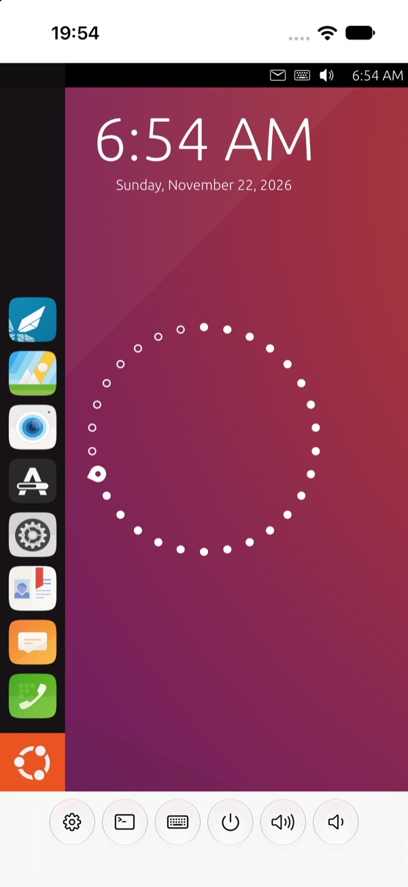
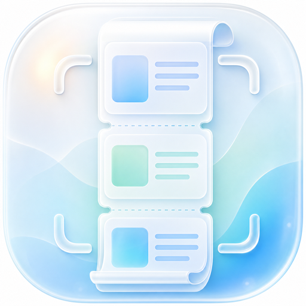
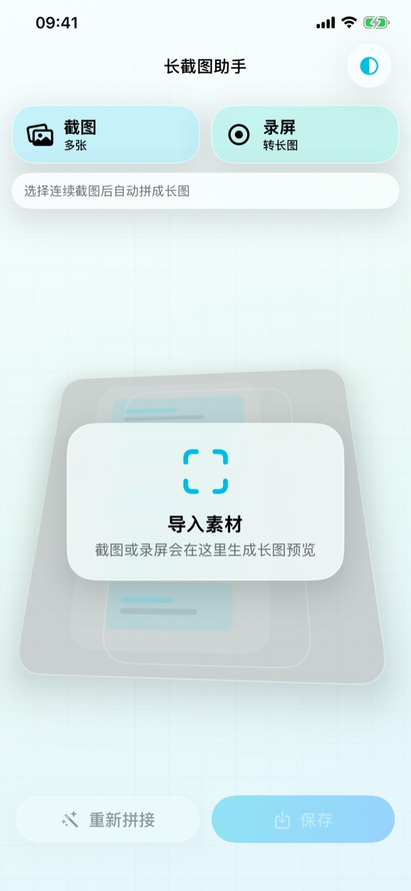
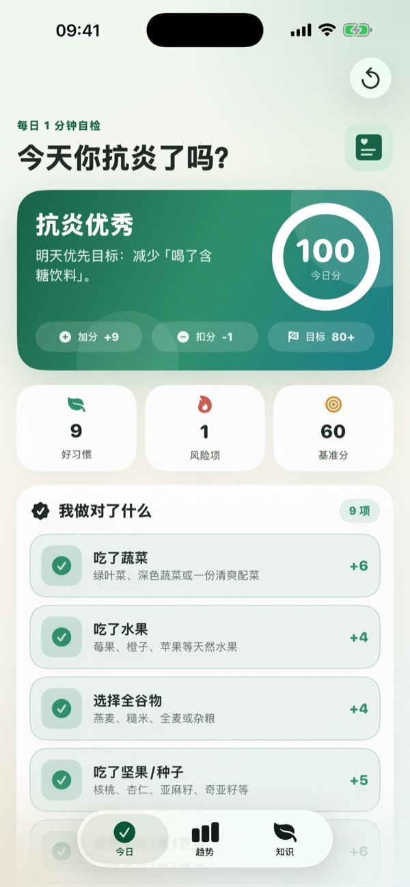

SYSTEMS, EXPLAINED THROUGH MAKING.
把复杂系统讲清楚，
把想法做成工具。
探索 Android 系统机制，制作可交互的学习实验，
也开发解决日常小问题的独立应用。
FRAME / PIPELINE视觉示意
从一次 doFrame，到真正上屏。
用可观察的过程，理解看不见的机制。
用可观察的过程，理解看不见的机制。
交互实验与技术工具
01 / LEARN BY EXPLORING为日常做一点工具
02 / INDEPENDENT APPSiOS × LINUX · 开发预览
Toucharium
把一套可交互的 Ubuntu Touch 带进 iPhone。在 iOS App 内本地运行 Linux 客体系统，用熟悉的触控方式探索 Lomiri 桌面，保留自己的文件、设置与探索成果。
- 原生触控体验竖屏桌面与边缘手势，支持 iPhone 键盘及实验性的 Ubuntu Touch 键盘。
- 自己的 Linux 空间客体文件和设置持久保存，让探索可以接着上次继续。
- 从应用到系统，源码开放基于 Kernarium 与 UBports，公开应用、运行时改动、内核配置和镜像工具。
iPHONE × UBUNTU TOUCH

开发预览 · 尚未在 App Store 发布
长截图助手
连续截图拼接，或把滚动录屏转成长图。
在设备本地整理值得保存的内容。
多图拼接录屏转长图本地处理

今天你抗炎了吗？
用简单的打卡，记录饮食、运动、睡眠与压力管理习惯，看见一周的生活节奏。
每日打卡7 天趋势习惯记录

写作与视频
03 / NOTES & IDEAS在不同的平台，继续分享探索与实践。
微信公众号
王小二的技术栈
微信扫一扫，关注我的公众号。
手机浏览时，可点击二维码查看原图，保存后在微信中识别。
关于这里
这是一个关于理解系统与动手创造的个人工作室。将抽象机制变成可观察的过程，将具体需求变成可以使用的工具。
kobe_wang@126.com ↗